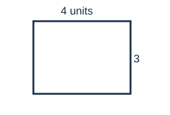

1
For x + 2 = 5, what is x?
- 1
- 2
- 3
- 4
Original synthetic development content. No source PDF extraction is claimed.
For x + 2 = 5, what is x?

The diagram shows a rectangle. What is its area, in square units?
Short answer: ____________________
1: C. 2: 12. No explanation guide supplied.